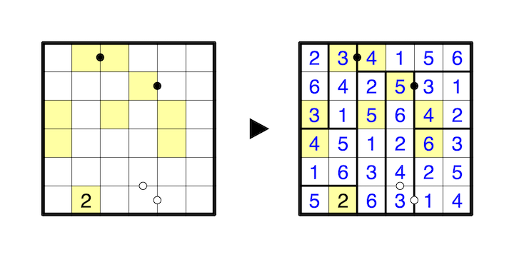

Divide the grid entirely into rectangles such that each rectangle contains exactly one colored cell, which contains the size of the rectangle. Numbers must not repeat in a rectangle.
If a white dot falls on the border between two rectangles, then the sums of the numbers within the two rectangles are consecutive. If a black dot falls on the border between two rectangles, then the sums of the numbers within the two rectangles are in a 1 to 2 ratio.
If a white dot does not fall on the border between two rectangles, then the two numbers it separates are consecutive. Likewise, if a black dot does not fall on the border between two rectangles, then the two numbers it separates are in a 1 to 2 ratio.
Not all possible dots are necessarily given.
A 1-6 example is provided.
